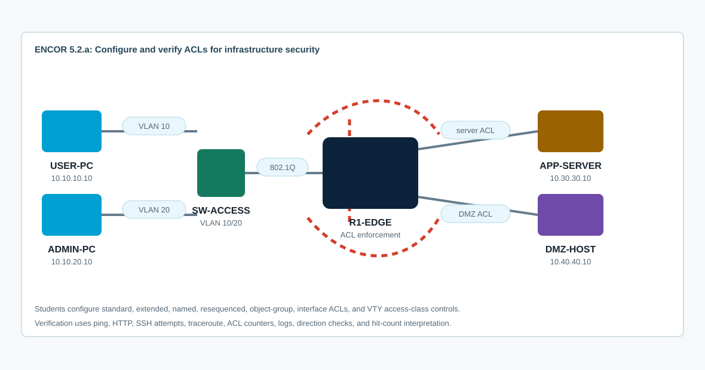

Overview
This lab targets ENCOR 5.2.a: configure and verify ACLs. You will use extended ACLs to filter application traffic, named ACL editing to correct policy order, object groups to simplify repeated entries, and standard ACLs to restrict device management access.
CCNP-level value is in placement, direction, and verification. A correct ACE in the wrong direction is still wrong. A permit without the required return or supporting traffic can look like a routing issue. You will prove behavior with traffic tests, ACL hit counters, logging, sequence numbers, and interface attachment state.
Topology
USER-PC and ADMIN-PC connect through SW-ACCESS to R1-EDGE using VLAN 10 and VLAN 20 subinterfaces. APP-SERVER represents an internal application segment. DMZ-HOST represents a restricted host. The starting CML topology has routing and service reachability only; ACLs are intentionally absent.

Task 1: Baseline Connectivity and Policy Requirements
Verify the network before adding policy. Record what works so ACL failures do not get confused with routing or host-service problems.
! R1-EDGE
show ip interface brief
show ip route
show running-config | include access-list|ip access-group|access-class
show access-lists
show ip interface Ethernet0/0.10
show ip interface Ethernet0/0.20
show ip interface Ethernet0/1
show ip interface Ethernet0/2From USER-PC and ADMIN-PC, test all services:
ping -c 3 10.30.30.10
wget -O- http://10.30.30.10
ping -c 3 10.40.40.10
wget -O- http://10.40.40.10
traceroute 10.30.30.10Policy goal:
- USER-PC may reach APP-SERVER on HTTP and ICMP only.
- USER-PC must not reach DMZ-HOST.
- ADMIN-PC may manage R1-EDGE by SSH and may reach both server networks.
- All other client-to-server traffic should be denied and visible in ACL counters.
Task 2: Configure an Extended Named ACL Near the Source
Filter USER-PC traffic as it enters R1-EDGE on VLAN 10. Extended ACLs should generally be placed close to the source because they can match source, destination, and transport.
! R1-EDGE
conf t
ip access-list extended USER-IN
remark Allow USER-PC to APP-SERVER HTTP and ICMP only
permit tcp host 10.10.10.10 host 10.30.30.10 eq 80
permit icmp host 10.10.10.10 host 10.30.30.10 echo
permit icmp host 10.30.30.10 host 10.10.10.10 echo-reply
deny ip host 10.10.10.10 10.40.40.0 0.0.0.255 log
deny ip host 10.10.10.10 any log
permit ip any any
exit
interface Ethernet0/0.10
ip access-group USER-IN in
end
!
show access-lists USER-IN
show ip interface Ethernet0/0.10 | include access listTest from USER-PC. HTTP and ping to APP-SERVER should work. DMZ-HOST should fail. Other traffic should increment deny counters.
Depth check: The final permit ip any any protects other traffic on the interface while this ACL focuses on USER-PC. Without it, the implicit deny blocks everything not explicitly permitted.
Task 3: Modify ACL Order with Sequence Numbers
Named ACLs are maintained by sequence number. Add a temporary mistake, observe the impact, then resequence and correct the ACL without removing it from the interface.
! R1-EDGE
conf t
ip access-list extended USER-IN
5 deny ip host 10.10.10.10 host 10.30.30.10 log
end
!
show access-lists USER-INRetest HTTP to APP-SERVER from USER-PC. It should fail because the earlier deny wins. Remove the bad line and resequence:
conf t
ip access-list extended USER-IN
no 5
exit
ip access-list resequence USER-IN 10 10
end
!
show access-lists USER-INRetest and confirm counters increment on the intended permit lines.
Task 4: Use Object Groups for Server Policy
Object groups reduce repeated ACEs and make policy intent easier to read. Configure ADMIN-PC access to both server networks using network and service object groups.
! R1-EDGE
conf t
object-group network SERVER-NETS
10.30.30.0 255.255.255.0
10.40.40.0 255.255.255.0
!
object-group service WEB-ICMP
tcp eq www
icmp
!
ip access-list extended ADMIN-IN
remark ADMIN-PC may reach server networks for web and ICMP
permit object-group WEB-ICMP host 10.10.20.10 object-group SERVER-NETS
deny ip host 10.10.20.10 any log
permit ip any any
!
interface Ethernet0/0.20
ip access-group ADMIN-IN in
end
!
show object-group
show access-lists ADMIN-IN
show ip interface Ethernet0/0.20 | include access listIf your image does not support service object groups in ACLs, replace the object-group ACE with explicit TCP/80 and ICMP permit statements. The verification and placement logic are the same.
Task 5: Restrict VTY Access with a Standard ACL
Use a standard ACL for source-only management access to R1-EDGE. Standard ACLs are appropriate here because the VTY line only needs to identify permitted source addresses.
! R1-EDGE
conf t
ip domain-name encor.local
username admin privilege 15 secret Admin123!
crypto key generate rsa modulus 2048
ip ssh version 2
ip access-list standard MGMT-SOURCES
permit host 10.10.20.10
deny any log
!
line vty 0 4
login local
transport input ssh
access-class MGMT-SOURCES in
line vty 5 15
login local
transport input ssh
access-class MGMT-SOURCES in
end
!
show access-lists MGMT-SOURCES
show running-config | section line vty
show ip sshADMIN-PC should be allowed to SSH to R1-EDGE. USER-PC should be denied by the VTY access-class even if the password is correct.
Task 6: Verify ACL Behavior, Counters, and Logs
Generate controlled traffic, then inspect counters. Clear counters only when you need a clean test window.
! R1-EDGE
clear access-list counters USER-IN
clear access-list counters ADMIN-IN
clear access-list counters MGMT-SOURCES
show access-lists
show ip interface Ethernet0/0.10
show ip interface Ethernet0/0.20
show logging | include SEC|list|denied|ACL|ACCESSTraffic matrix:
- USER-PC to APP-SERVER HTTP: permitted.
- USER-PC to APP-SERVER ICMP: permitted.
- USER-PC to DMZ-HOST: denied and counted.
- ADMIN-PC to APP-SERVER HTTP/ICMP: permitted.
- ADMIN-PC to DMZ-HOST HTTP/ICMP: permitted.
- USER-PC SSH to R1-EDGE: denied by VTY access-class.
show access-lists USER-IN
show access-lists ADMIN-IN
show access-lists MGMT-SOURCES
show running-config interface Ethernet0/0.10
show running-config interface Ethernet0/0.20Task 7: Troubleshoot ACL Defects
Work from symptom to placement, direction, order, match criteria, and implicit deny.
- Traffic is blocked because the ACL is applied inbound when you expected outbound, or vice versa.
- A deny ACE is above a permit ACE, so the permit never matches.
- The wildcard mask is wrong, matching a broader network than intended.
- The ACL permits TCP/80 but the test uses ICMP or another protocol.
- The implicit deny is blocking unrelated traffic because there is no explicit final permit.
- VTY access-class blocks management even though the data-plane ACL permits the source.
- Counters do not increment because traffic is taking a different interface or never reaches the router.
show access-lists
show ip interface
show running-config | include access-group|access-class
show running-config | section ip access-list
show cef exact-route 10.10.10.10 10.30.30.10
show logging | include denied|list|ACL
debug ip packet detail 101
undebug allUse packet debugs sparingly. ACL counters, interface attachment, and targeted traffic tests usually provide enough evidence without creating excessive control-plane load.